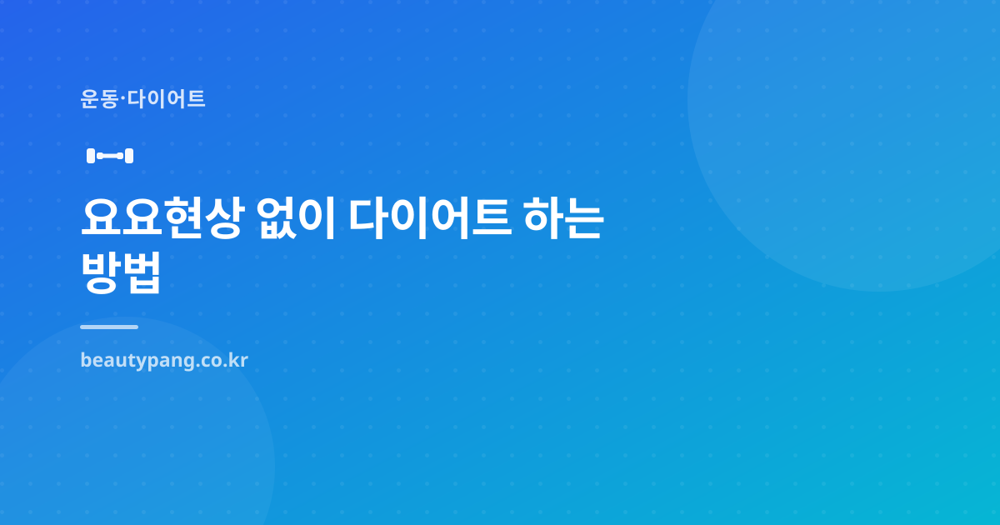

다이어트를 해본 사람들에게 가장 무서운 것은 바로 요요현상일 것입니다. 실제로 다이어트를 끝낸 후에 안타깝게도 약 20% 정도의 사람들만 체중을 유지하고 있습니다. 이 외에 많은 사람들의 체중이 다시 예전으로 돌아갑니다. 이렇게 체중의 증감을 반복하게 되는 체중순환 현상을 요요현상이라고 하는데요. 오늘은 요요 현상 없는 다이어트를 하기 위해 어떻게 해야 하는지에 대한 방법을 알아보도록 하겠습니다.
일반적으로 조금만 식단관리를 해도 1~2kg 정도의 감량 효과를 볼 수 있지만 이 시기에 변화하는 체중은 대개 체수분입니다. 2~3일 굶으면 지방의 변화는 없이 체수분만 줄어들게 되는데 지방은 그대로인데 체중이 조금 줄었다고 이후 폭식으로 이어지게 된다면 체지방이 늘어나게 됩니다. 이러한 상황이 반복되면 체지방 비율은 점점 높아지게 되는 것입니다.
운동으로 살을 빼는 것은 식사량을 극도로 줄이는 것보다는 건강한 감량 방법이긴 하지만 오히려 과도한 운동은 요요현상을 일으킬 수 있습니다. 또한 무리한 목표를 잡고 단기간에 감량하려고 하면 요요에서 자유로울 수 없으며 여러 연구에 따르면 요요 현상이 반복되고 체중 변화의 폭이 큰 경우 담석과 같은 담낭질환이나 신장암의 위험이 증가할 수 있다고 합니다.
- 무리한 다이어트 : 다이어트는 생활 습관인데 무리한 규칙에 중점을 두게 되면 다이어트에 실패 할 수 있습니다.
- 잘못된 다이어트 생각 : 건강한 음식으로 장기적인 다이어트 계획을 세워야 하는데 빠르게 체중을 줄이게 되면 원래 체중으로 돌아갈 가능성이 높아집니다.
- 극단적인 칼로리 섭취 제한 : 칼로리를 갑자기 줄이게 되면 신진대사를 늦추게 되고 식욕과 관련된 호르몬에 이상을 발생 시키게 됩니다.
- 운동하기
운동은 요요현상 없이 체중을 유지하는데 굉장히 중요한 역할을 하고 여분의 칼로리를 태울 수 있습니다. 연구에 따르면 일주일에 최소 30분 동안 운동을 하는 사람들은 체중을 유지할 가능성이 높다고 합니다. 그렇기 때문에 체중을 유지하기 위해서는 하루 최소 30분 동안 운동을 하면서 섭취 칼로리와 소모 칼로리의 균형을 유지해야 합니다.
한 달에 본인 체중의 3~5% 정도의 체중을 감량하고 빠지는 체중의 60% 이상 체지방으로 감량하는 것을 목표로 하는 것이 좋습니다. 요요가 반복되면 적게 먹어도 살이 빠지지 않고 오히려 체중이 쉽게 증가하기 때문에 다이어트를 하기 점점 힘들어집니다.
다이어트 끝난 후에도 몸무게를 정기적으로 측정해야 합니다. 연구에 따르면 매일 몸무게를 측정하는 사람들은 체중을 덜 자주 측정하는 사람들보다 하루에 더 많은 칼로리를 소비하였습니다. 따라서 가능한 매일 몸무게를 측정하는 것이 중요합니다.
아침 식사를 하면 요요 현상 없이 현재 체중을 유지할 수 있는데 아침 식사를 하는 사람들은 운동을 더 많이 하고 식이 섬유와 풍부한 영양소를 섭취하는 건강한 습관을 가지고 있습니다. 그리고 다이어트 끝난 후 1년 이상 체중을 유지하는 사람들은 아침 식사를 하는 것으로 밝혀졌습니다.
요요 현상을 막기 위해서는 정제된 탄수화물 섭취를 주의 하여야 하는데 흰 밥, 흰 빵, 국수, 라면 등 과 같은 정제된 탄수화물은 쉽게 몸무게를 증가 시킵니다. 이유는 정제된 탄수화물은 식이 섬유와 영양소를 제거를 한 음식이기 때문입니다. 식이 섬유가 적은 음식은 체중 증가와 비만에 영향을 미치며 정제된 탄수화물 음식 섭취를 줄이면 현재 체중을 유지하는데 도움이 될 수 있습니다.
수면이 부족하면 체중을 증가 시키는 위험 요소이며 요요 현상 및 현재 체중을 유지하기 어렵게 만듭니다. 그리고 식욕 조절을 방해하여 폭식을 하게 하고 스트레스 수치를 증가 시키기 때문에 건강한 생활과 체중 조절을 위해 적어도 7시간 이상 수면을 취하는 것이 중요합니다.
또한 물을 자주 마시는 것은 체중 유지에 도움이 됩니다. 식사 전에 한 두 잔의 물을 마시면 하루 칼로리 섭취량을 줄여주는데 큰 도움이 됩니다.
하루에 섭취한 음식이 무엇인지 기록을 하게 되면 체중을 유지하는 것과 체중 감량을 위해 도움이 됩니다. 메모를 해도 되고 스마트폰에 다양한 하루 칼로리 기록하는 앱이 있으니 앱을 이용하여도 좋습니다. 이러한 앱에는 하루 음식 섭취량과 칼로리 정보를 제공하기 때문에 실제 먹는 음식에 대한 인식을 높여줍니다.
다이어트는 제한적이고 비현실적입니다. 앞서 말했듯이 다이어트가 끝난 후 많은 사람들이 요요현상을 경험합니다. 목표 체중에 도달했다고 다이어트가 끝난게 아니기 때문에 끝난 후 체중을 유지하기 위하여 생활 습관, 식단, 운동, 수면 등을 지켜 건강한 생활습관으로 조금씩이라도 바꾸려는 노력이 필요합니다.
함께 보면 좋은 계산기